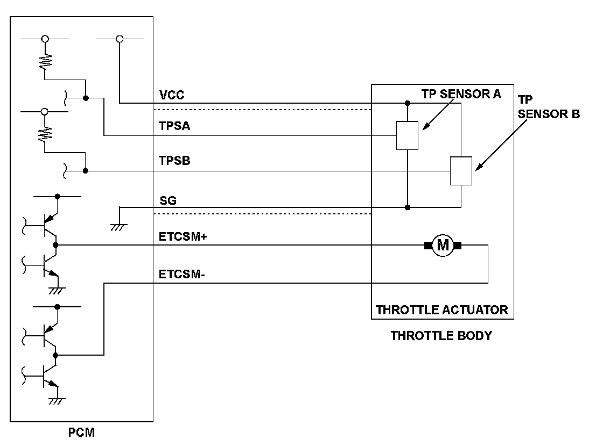
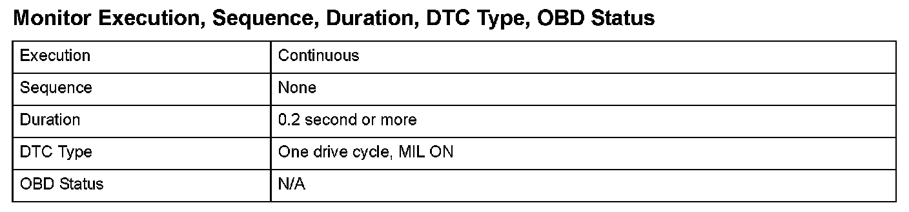
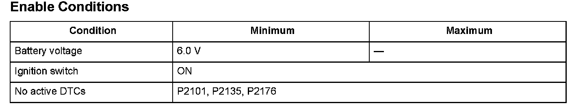

Advanced Diagnostics
DTC P2118: Throttle Actuator Current Range/Performance Problem
General Description
The electronic throttle control system (ETCS) controls the throttle valve opening. The system is composed of the throttle actuator, the throttle valve, throttle position (TP) sensors A and B, the throttle actuator control module, the throttle actuator control module relay, the accelerator pedal position (APP) sensor, and the powertrain control module (PCM).
The APP sensor is operated via the throttle cable to determine the accelerator opening value when the driver presses the accelerator pedal. The accelerator pedal opening value is converted to a signal in the APP sensor and transmitted to the PCM to compute the target position. The target position signal is then transmitted to the throttle actuator control module. The throttle actuator control module determines the throttle valve target position according to the signal received and operates the throttle actuator to move the throttle valve to the target position. The actual throttle valve position is determined by TP sensor A installed in the throttle body.
When the output current to the throttle actuator exceeds the specification for a set time, the throttle actuator control module detects a malfunction and transmits the malfunction data to the PCM. When the PCM receives the malfunction data from the throttle actuator control module, the PCM detects a malfunction of the throttle actuator system and stores a DTC.

Monitor Execution, Sequence, Duration, DTC Type, OBD Status

Enable Conditions
Malfunction Threshold
The current flow to the throttle actuator is 11 A or more for at least 0.2 second.
Diagnosis Details
Conditions for illuminating the MIL
When a malfunction is detected, the MIL comes on and the DTC and the freeze frame data are stored in the PCM memory.
Conditions for clearing the MIL
The MIL will be cleared if the malfunction does not recur during three consecutive trips in which the diagnostic runs.
The MIL, the DTC, and the freeze frame data can be cleared by using the scan tool Clear command or by disconnecting the battery.